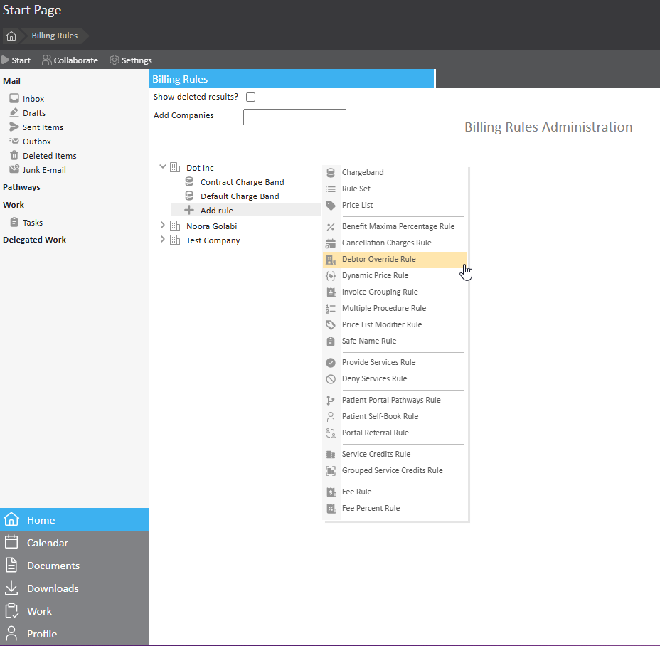
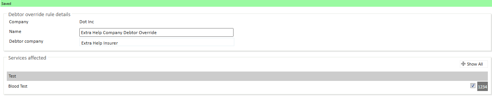
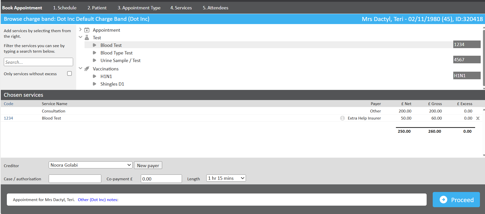

A Debtor Override is a rule used in billing systems when the organisation receiving the invoice is different from the organisation that owns the charge band or originally requested the service.
The Debtor Override rule in Meddbase allows you to invoice selected services to a third party, which is different from the company responsible for the charge band. This allows the service activity to still be recorded against the charge band, but the invoice is redirected to another named company (the override debtor). This ensures that specific services are billed correctly when a third party, partner organisation, sponsor, or funder is responsible for payment rather than the charge band owner.
For example, the service belongs to Company A, but the invoice needs to go to Company B (a third party). The Debtor Override tells the system to bill Company B instead.
This article describes the following:
Debtor Overrides are used to ensure the correct customer is billed, especially when:
Before applying a Debtor Override, the following must be configured:
Once these conditions are met, the Debtor Override rule can successfully transfer charges to the designated company.
The Debtor Override rule cannot be applied to the following:
To configure the Debtor Override, go to Admin > Billing rules:


Once a Debtor Override rule is active on a Charge Band, the system will automatically display the overridden payer whenever a service linked to that rule is selected in the booking or billing process.

A patient is admitted under a Charge Band owned by Company A (responsible for the admission and general care). Per a commercial agreement, specific services (e.g., MRI Scan, Consultant Review, Diagnostic Tests) must be invoiced to Company B instead of Company A.
Why use the Debtor Override Rule?To redirect invoices for selected services to Company B while keeping the service activity recorded against Company A’s Charge Band. This prevents manual rework, misdirected invoices, and contract non‑compliance.
What Changes for Users (Booking & Visibility)